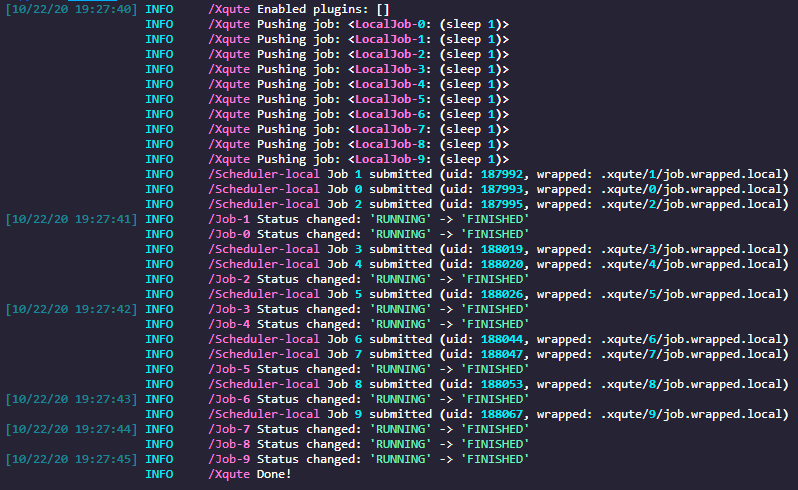

Home
xqute
A job management system for Python, designed to simplify job scheduling and execution with support for multiple schedulers and plugins.
Features
- Written in async for high performance
- Plugin system for extensibility
- Scheduler adaptor for various backends
- Job retrying and pipeline halting on failure
- Support for cloud-based working directories
- Built-in support for Google Batch Jobs, Slurm, SGE, SSH, and container schedulers
Installation
pip install xqute
A Toy Example
import asyncio
from xqute import Xqute
async def main():
# Initialize Xqute with 3 jobs allowed to run concurrently
xqute = Xqute(forks=3)
for _ in range(10):
await xqute.feed(['sleep', '1'])
await xqute.run_until_complete()
if __name__ == '__main__':
asyncio.run(main())
Daemon Mode (Keep Feeding)
You can also run Xqute in daemon mode, where jobs can be added continuously after starting:
import asyncio
from xqute import Xqute
async def main():
xqute = Xqute(forks=3)
# Add initial job
await xqute.feed(['echo', 'Job 1'])
# Start in keep_feeding mode (returns immediately)
await xqute.run_until_complete(keep_feeding=True)
# Continue adding jobs dynamically
for i in range(2, 11):
await xqute.feed(['sleep', '1'])
await asyncio.sleep(0.1) # Jobs can be added over time
# Signal completion and wait for all jobs to finish
await xqute.stop_feeding()
if __name__ == '__main__':
asyncio.run(main())
Tip: Use xqute.is_feeding() to check if you need to call stop_feeding().

API Documentation
Full API documentation is available at: https://pwwang.github.io/xqute/
Usage
Xqute Object
An Xqute object is initialized as follows:
xqute = Xqute(...)
Available arguments are:
scheduler: The scheduler class or name (default:local)plugins: Plugins to enable/disable for this sessionworkdir: Directory for job metadata (default:./.xqute/)forks: Number of jobs allowed to run concurrentlyerror_strategy: Strategy for handling errors (e.g.,halt,retry)num_retries: Maximum number of retries whenerror_strategyis set toretrysubmission_batch: Number of jobs to submit in a batchscheduler_opts: Additional keyword arguments for the schedulerjobname_prefix: Prefix for job namesrecheck_interval: Interval to recheck job status. The actual interval will be<recheck_interval> * <xqute.defaults.SLEEP_INTERVAL_POLLING_JOBS>
Note: The producer must be initialized within an event loop.
To add a job to the queue:
await xqute.feed(['echo', 'Hello, World!'])
To run until all jobs complete:
# Traditional mode - wait for all jobs to complete
await xqute.run_until_complete()
# Or daemon mode - add jobs continuously
await xqute.run_until_complete(keep_feeding=True)
# ... add more jobs ...
await xqute.stop_feeding() # Signal completion and wait
Using SGE Scheduler
xqute = Xqute(
scheduler='sge',
forks=100,
scheduler_opts={
'qsub': '/path/to/qsub',
'qdel': '/path/to/qdel',
'qstat': '/path/to/qstat',
'q': '1-day', # or qsub_q='1-day'
}
)
Keyword arguments starting with sge_ are interpreted as qsub options. For example:
'l': ['h_vmem=2G', 'gpu=1']
#$ -l h_vmem=2G
#$ -l gpu=1
Using Slurm Scheduler
xqute = Xqute(
scheduler='slurm',
forks=100,
scheduler_opts={
'sbatch': '/path/to/sbatch',
'scancel': '/path/to/scancel',
'squeue': '/path/to/squeue',
'partition': '1-day',
'time': '01:00:00',
}
)
Using SSH Scheduler
xqute = Xqute(
scheduler='ssh',
forks=100,
scheduler_opts={
'ssh': '/path/to/ssh',
'servers': {
'server1': {
'user': 'username',
'port': 22,
'keyfile': '/path/to/keyfile',
'ctrl_persist': 600,
'ctrl_dir': '/tmp',
}
}
}
)
Note: SSH servers must share the same filesystem and use keyfile authentication.
Using Google Batch Jobs Scheduler
xqute = Xqute(
scheduler='gbatch',
forks=100,
scheduler_opts={
'project': 'your-gcp-project-id',
'location': 'us-central1',
'gcloud': '/path/to/gcloud',
'taskGroups': [ ... ],
}
)
Using Container Scheduler
xqute = Xqute(
scheduler='container',
forks=100,
scheduler_opts={
'image': 'docker://bash:latest',
'entrypoint': '/usr/local/bin/bash',
'bin': 'docker',
'volumes': '/host/path:/container/path',
'envs': {'MY_ENV_VAR': 'value'},
'remove': True,
'bin_args': ['--hostname', 'xqute-container'],
}
)
Plugins
To create a plugin for xqute, implement the following hooks:
def on_init(scheduler): Called after the scheduler is initializeddef on_shutdown(scheduler, sig): Called when the scheduler shuts downasync def on_job_init(scheduler, job): Called when a job is initializedasync def on_job_queued(scheduler, job): Called when a job is queuedasync def on_job_submitted(scheduler, job): Called when a job is submittedasync def on_job_started(scheduler, job): Called when a job starts runningasync def on_job_polling(scheduler, job, counter): Called during job status pollingasync def on_job_killing(scheduler, job): Called when a job is being killedasync def on_job_killed(scheduler, job): Called when a job is killedasync def on_job_failed(scheduler, job): Called when a job failsasync def on_job_succeeded(scheduler, job): Called when a job succeedsdef on_jobcmd_init(scheduler, job) -> str: Called during job command initializationdef on_jobcmd_prep(scheduler, job) -> str: Called before the job command runsdef on_jobcmd_end(scheduler, job) -> str: Called after the job command completes
To implement a hook, use the simplug plugin manager:
from xqute import simplug as pm
@pm.impl
def on_init(scheduler):
...
Implementing a Scheduler
To create a custom scheduler, subclass the Scheduler abstract class and implement the following methods:
from xqute import Scheduler
class MyScheduler(Scheduler):
name = 'mysched'
async def submit_job(self, job):
"""Submit a job and return its unique ID."""
async def kill_job(self, job):
"""Kill a job."""
async def job_is_running(self, job):
"""Check if a job is running."""